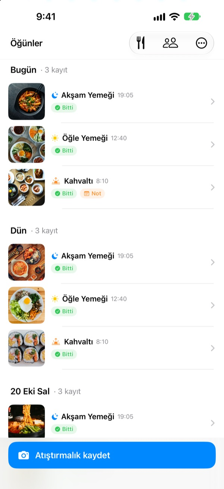
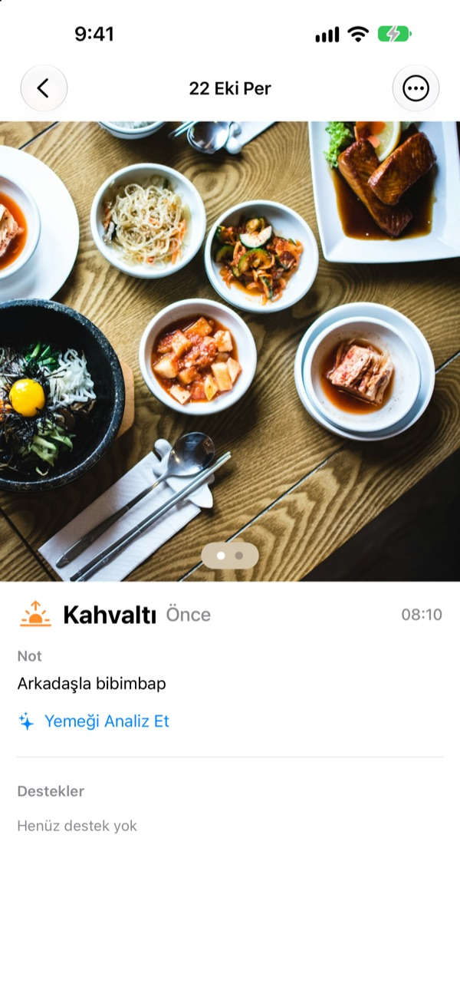
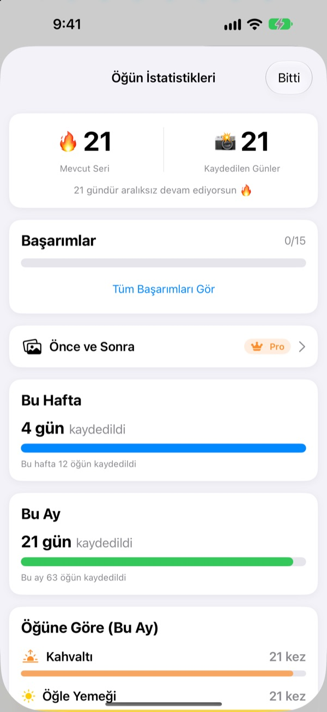
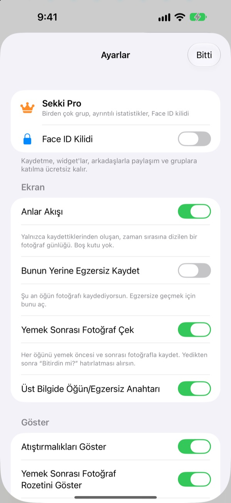

Yemekten önce bir fotoğraf.
Kayıt tamam.
Sekki fotoğrafın ne zaman çekildiğine bakar ve onu kahvaltı, öğle yemeği, akşam yemeği ya da atıştırmalık olarak ayırır. Günde tek bir öğün kaydetsen bile serin sürer.
Kayıt, istatistikler, widget'lar ve arkadaşlarla paylaşım ücretsiz.

Kendin dene
Bir saat seç ve kaydet düğmesine dokun. Uygulamadaki gibi, düğme o saatin öğününü baştan gösterir.
Yemek günlüğünü üç günde bıraktın mı?
Bir kahvaltıyı atlarsın, bir akşam yemeğini unutursun, boş kutular gözüne batmaya başlar ve sonunda uygulamayı silersin. Sekki'de boş kutu yok. Yalnızca kaydettiğin öğünler sırayla birikir, tek bir fotoğraf o günün sayılmasına yeter.
Çek, öğün yerini bulsun
Çekim saatine göre Sekki fotoğrafı kahvaltı, öğle yemeği, akşam yemeği ya da atıştırmalık olarak ayırır. Önce ve sonra fotoğrafları ekle, fotoğrafsız kaydet ya da not yaz.
Yemek, cihazında ücretsiz olarak tanınır ve fotoğrafların telefonundan hiç çıkmaz.

Hiç azalmayan bir günlük
Günde bir öğün serini korur, toplam kayıtlı gün sayın asla düşmez. Haftalık ve aylık istatistikler başarı yüzdesi yerine kaç gün ve kaç öğün kaydettiğini gösterir.
Yol boyunca 7 Gün Seri ve Erkenci Kuş gibi başarılar toplarsın.

Yalnızca seçtiğin öğünler, uygulamayı açmadan
Hangi öğünler için hatırlatma istediğini seç, saatleri gününe göre ayarla. Önce fotoğrafını çektikten sonra Bitti'yi doğrudan bildirimden işaretlersin.
Eylem düğmesi, Siri, Kestirmeler ya da bir widget ile de kaydet, arkadaşlarını kodla ekleyip emoji ve yorumlarla birbirinizi destekleyin.

Üç adımda başla
- 1
Öğünlerini seç
İlk açılışta Sekki hangi öğünleri hatırlatacağını sorar. Ayarlar'dan değiştirebilirsin.
- 2
Yemekten önce bir fotoğraf
Kaydet düğmesi şu anki saatin öğününü zaten gösterir. Dokun, çek, bitti.
- 3
Bitince bir dokunuş
Bildirimde ya da widget'ta Bitti'ye dokun veya sonra fotoğrafı ekle.
Uygulamayı açmadan kaydetmek
- Bildirim
- Önce fotoğrafından sonra Bitti'yi doğrudan bildirimden işaretle
- Ana ekran widget'ı
- Bugünkü kayıt sayısını ve yemekte olduğun öğünü gör, Bitti'ye dokun
- Kilitli ekran widget'ları
- Dikdörtgen, yuvarlak ve tek satır
- Eylem düğmesi · Siri · Kestirmeler
- Tek dokunuşla ya da tek cümleyle Bitti
- Fotoğraflar'a kaydet
- Ayarlar'dan açınca öğünler ve egzersizler ayrı Sekki albümlerine kaydedilir
- Egzersiz modu
- Egzersizler öğünlerden ayrı tutulur, bu ayki antrenman sayısı bir bakışta görünür
Widget'taki Bitti düğmesi iOS 17 veya sonrasını gerektirir.
Kayıt ücretsiz. Sekki Pro daha derine iner.
Ücretsiz
- Otomatik öğün ayırmalı fotoğraf kaydı, önce ve sonra fotoğrafları, notlar
- Seriler, toplam gün, haftalık ve aylık istatistikler, başarılar
- Seçtiğin öğünler için hatırlatma, uygulamayı açmadan Bitti
- Widget'lar, Eylem düğmesi, Siri ve Kestirmeler
- Öğün ve egzersizleri arkadaşlarla paylaşma, emoji ve yorumlar
- Bir grup oluşturma, istediğin kadar gruba katılma
- Cihazda yemek tanıma
Sekki Pro
- Aile, iş ya da spor arkadaşları için birden çok grup
- Birkaç hafta önceki ve bugünkü öğünleri yan yana karşılaştırma
- En sık yediğin yemekleri görme
- Uygulamayı Face ID ya da Touch ID ile kilitleme
Yıllık ya da aylık abonelik veya tek seferlik ömür boyu satın alma
Abonelik, dönem bitmeden en az 24 saat önce iptal edilmezse otomatik olarak yenilenir. İstediğin zaman Ayarlar > Apple Hesabı > Abonelikler'den iptal edebilirsin. Hizmet koşulları: m1zz.github.io/RoutineCamera/tr/terms.html
Sık sorulan sorular
Fotoğraflarım nerede saklanıyor?
Cihazında. Ayarlar'da Fotoğraflar'a Otomatik Kaydet'i açarsan Fotoğraflar'daki Sekki albümlerine de kaydedilir. Öğünlerimi Paylaş açık olduğu sürece (başta açıktır) eklediğin arkadaşlar görebilsin diye iCloud'a yüklenir. Ayarlar > Hesap ve Paylaşım'dan kapatabilirsin.
Arkadaş nasıl eklerim?
Arkadaşlar ekranında altı karakterlik kodunu paylaş ve arkadaşının kodunu gir. Birden çok kodu virgülle ayırarak tek seferde yapıştırabilirsin.
Bir arkadaşımı nasıl desteklerim?
Arkadaşının bir öğününü aç ve bir emoji ya da kısa bir yorum bırak. Henüz kayıt yapmadıysa boş kutuya dokunarak onu nazikçe dürt.
Bir öğünü atlarsam serim bozulur mu?
Hayır. O gün atıştırmalık dahil herhangi bir öğün kaydedersen serin devam eder. Bütün bir günü atlasan bile toplam kayıtlı gün sayısı düşmez.
Bildirim gelmiyor.
iOS Ayarlar > Bildirimler'de Sekki bildirimlerine izin verildiğini ve cihazın iCloud'a giriş yaptığını kontrol et. Hatırlatma saatlerini uygulamanın ayarlarından değiştirebilirsin.
Yemek tanıma fotoğraflarımı sunucuya gönderiyor mu?
Hayır. Cihazda çalışır, fotoğrafların telefonundan hiç çıkmaz. Ücretsiz ve sınırsız.
Hesabımı ve verilerimi nasıl silerim?
Arkadaşlar > Hesap > Hesabı Sil yolunu izle. Hesabın ve sunucudaki öğün verileri silinir ve geri getirilemez. Bir sorun olursa bize e-posta gönder.
Aboneliği nasıl iptal ederim?
Ayarlar > Apple Hesabı > Abonelikler'den. Dönem bitmeden en az 24 saat önce iptal etmezsen otomatik yenilenir. Ömür boyu satın alma bir kez ödenir.
Hata, fikir ya da hesapla ilgili soruların için leeo@kakao.com adresine yaz veya Instagram'da @lee25_ios hesabına DM gönder. Genellikle bir iki gün içinde yanıtlıyoruz.